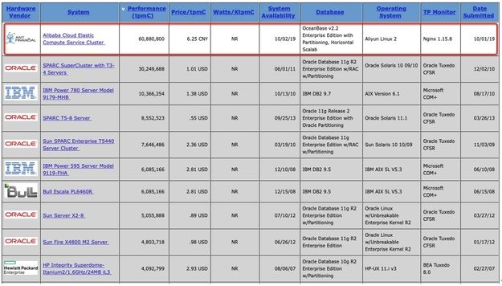

国庆这几天OceanBase登顶TPC-C榜单的消息引来了不少的讨论。暑假刚在OB实习，感觉团队非常不错，所以在第一时间转发了消息。当时以为不会引起太大关注，没想到后来几天网上的讨论越来越多，身边也有不少同学关注，于是就这里发表一些个人的观点。
OceanBase与Oracle确有差距
首先有一点应该大部分人都可以达成共识，那就是抛开不同架构不谈，目前的OceanBase与Oracle是有差距的，这一点OceanBase的同学也都非常清楚。包括前不久的云栖大会上OB同学的分享，其中就提到Oracle有40多年的历史，而10岁的OB还很年轻。
OB登顶可喜可贺
差距确实存在，但是登顶TPC-C是事实，官网列出的性能等数据也都是真实的。虽然不能表示OB的性能好于最新版本的Oracle、DB2，但也一定程度上展示了OB强大的性能，确实有能力打破Oracle在企业数据库领域的垄断地位。
OB十年磨一剑，兢兢业业专注分布式数据库，坚持完全自主研发，如今小有成就，在支撑阿里、蚂蚁核心业务的同时，开始走出去为各大金融机构提供服务，确实很不容易，值得庆祝。
关于网上讨论的热点
接下来就说说网上讨论的一些热点问题，其中会引用阳老师、日照回答，也会加入自己的一些自己的观点。
时间问题

OB提交时间是2019年10月2日，其他几家数据库的提交时间是2011、2010年，不同时间提交的结果具有可比性吗？
这确实是一个关键问题。当前TPC-C榜单的成绩已经很高了，想要有所突破通常需要针对测试做一些专门的优化（包括硬件和软件层面），且测试过程非常严格，总得来说这是一个费时费力的过程。Oracle在2010年测出3000多万的结果后，其他厂商基本已经够不成威胁了，因此Oracle也失去了继续刷分的动力。2013年Oracle做了一个榜单第4的成绩，主要是为了推广Sun的SPARC处理器。此外这个单机做出来的850多万的成绩也是为了“震慑”其他厂商，告诉大家达不到一定的性能还是不要尝试了。
如今摩尔定律已经失效，且Oracle采用的专用硬件性能提升应该没有普通PC服务器快，但是经过近10年软硬件的发展，Oracle大概率还是能刷到榜首，至于具体成绩能达到多少，恐怕只有等榜单更新才能知道了。OB的这次刷榜更多是证明自己实力，而不是向全世界宣告自己已经是领域老大。
系统成本问题
也有一些网友抨击OB此次测试使用的系统“土豪”（网友评论），比2010年Oracle的系统更加昂贵。但其实OB的价格肯定是比Oracle低的，这也是阿里内部用OceanBase替代Oracle的动力之一。分布式架构的一个主要特点就是能用相对廉价的服务器替换掉专用服务器，互联网企业青睐分布式架构的一个原因也在于对低成本的追求。
具体的TPC-C价格计算方式可以看如下分析：
TPC-C 测试综合计算软硬件价格以及三年服务价格，软硬件价格除了数据库和存储，还包括针对 TPC-C 场景开发的应用系统，甚至连测试使用的台式机也需要计算在内。软件价格和硬件价格最好区分开来，硬件价格代表商业数据库的真实成本，软件价格代表商业数据库的利润。例如，OceanBase 这次 TPC-C 测试的总体价格虽然不低，但是硬件价格占比很低（不到 18%），真实性价比远远高于第二名 Oracle，整体性价比和 Oracle 比较接近更像是一种定价策略。另外，TPC-C 测试要求磁盘至少能够存储 60 天的数据量。集中式数据库往往存储一份数据，而 OceanBase 采用 Paxos 协议实现 RPO = 0，在 TPC-C 测试以及主流生产系统中都存储了 2 份数据和 3 份日志，相当于 OceanBase 需要提供 120 天的存储容量并计入价格。
是否吹嘘过头
一些媒体的描述确实有过分吹捧的嫌疑，比如直接强调OB超越Oracle确实言过其实。一方面可能在于媒体想搞个大新闻，另一方面也在于OB正处于走出去的阶段，借此机会提升产品知名度是十分必要的。就我实习近三个月对团队的了解，OB团队脚踏实地，应该不会被阶段性的成果冲昏头脑。
这次宣传很成功，OB未来的挑战还有很多。